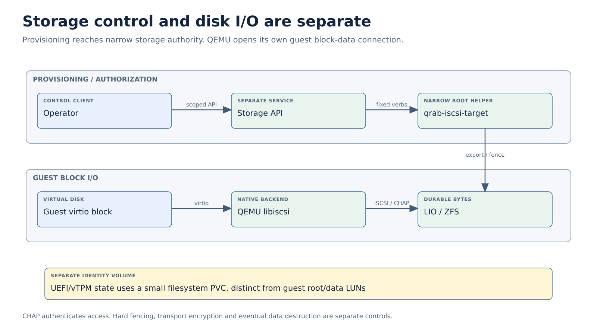
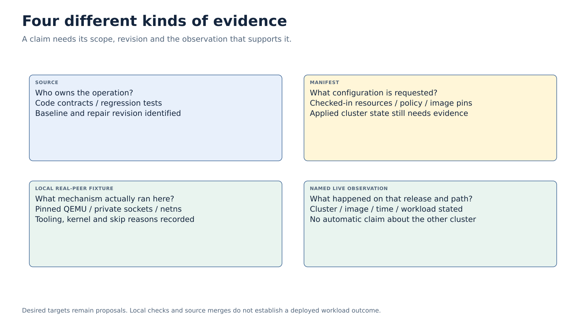

Images and disks: storage review
Images and disks: keep every surviving contract
Storage review / Glance and Cinder replacement
Evidence: U03, U04, S13, S14, S151 / 12 · storage

Storage: simple control and I/O overview
Images and disks: storage review
Replace APIs; preserve required work
| OpenStack responsibility | qrab owner / remaining scope |
|---|---|
| Glance image lifecycle | BaseImage controller, verified import Jobs and sealed storage generations |
| Cinder volume lifecycle | Disk reconciler, scoped storage verbs, LIO/ZFS and export generations |
| Workload acceptance | Required catalog, backup/restore, recovery and operational subset |
Evidence: U03, U04, S13, S14, S153 / 12 · storage

From verified source to a sealed clone origin

A digest does not authenticate extra image dependencies
Images and disks: storage review
Image integrity has a precise boundary
- Verify one downloaded source; reject undeclared backing and external-data inputs.
- Let pinned QEMU perform full format validation and conversion.
- Seal the verified raw generation; prepare backing chains in a trusted source environment.
Evidence: A04, S15, T026 / 12 · storage
Images and disks: storage review
Three resources with different ownership
| Resource | Relevant owner and proof |
|---|---|
| Guest LUN | Export generation, CHAP and hard backend fencing |
| Firmware/vTPM filesystem | VM-bound identity lease and storage attachment contract |
| Base image generation | Verified source, sealed origin and clone/retirement contract |
Evidence: S05, S13, S14, S157 / 12 · storage
Images and disks: storage review
One writer requires backend evidence
Authenticate
CHAP authorizes the exact export generation.
Exclude old writers
Clean ownership evidence or a completed hard backend fence gates replacement.
Recover deliberately
Unknown ownership stays unknown until the responsible storage barrier completes.
Evidence: S13, S148 / 12 · storage

Migration: simple ownership and stream overview
Images and disks: storage review
Deletion is a staged storage lifecycle
- Fence guest exports before releasing or retiring their ownership.
- Native guest-disk destruction follows the separate grace reaper contract.
- Retained identity PVC/PV cleanup and external access-group cleanup have other owners.
Evidence: A01, A02, S05, S13, S1410 / 12 · storage

Four different kinds of evidence
Images and disks: storage review
Finish the workload subset before retiring services
- Prove import, clone, grow, attach and failure recovery on the chosen backend.
- Prove application consistency and backup/restore, including retained identity state.
- Record explicit destruction policy and a data-aware rollback procedure.
Evidence: S05, S13, S14, S15, U0412 / 12 · storage